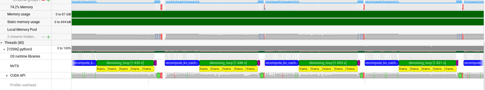
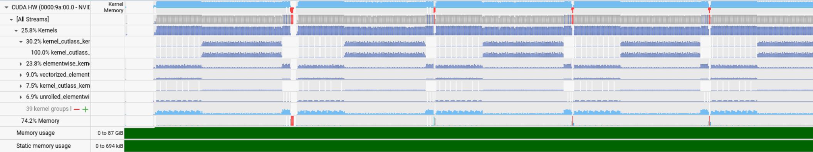
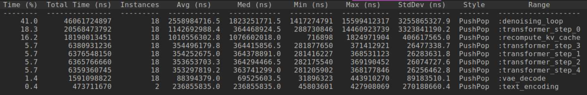
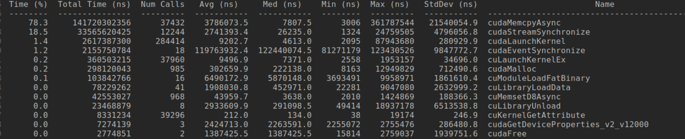
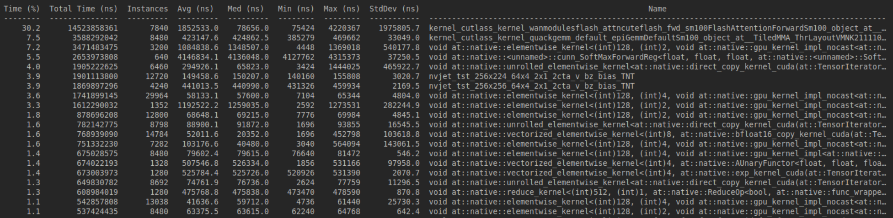
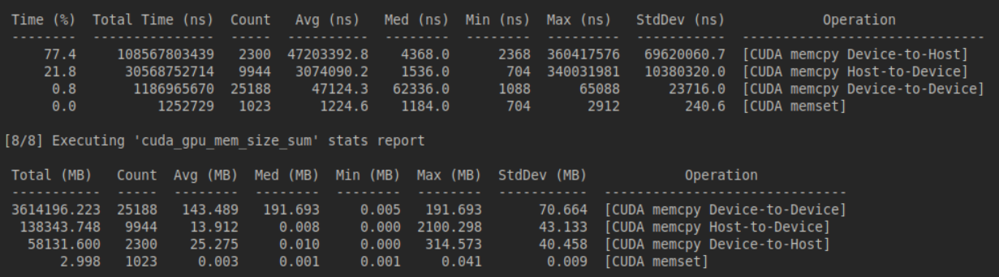

Optimizing Qwen-Image-2512 on a B200: A Deep Dive

Ignore the GIF artifacts thoughout the blog
This blog documents the optimization pipeline for the Qwen-Image-2512, specifically targeted at the NVIDIA B200 (sm_100). In this blog, I will try to dissect the naive implementation of the Qwen-Image pipeline, identify compute and memory bound regions via profiling, and apply systematic optimizations ranging from graph compilation (torch.compile) to custom kernel integration. Mostly focusing on high-impact areas: the Dual-Stream Diffusion Transformer (DiT) backbone, 3D Rotary Positional Embeddings (RoPE), and Joint Attention mechanisms. At every step of the optimizations I will try to attach an image for benchmark and tokens-per-sec or the inference time either at 50 steps or at 28 steps (standard for qwen-image-2512).
Model Architecture
The Qwen-Image-2512 model follows a Flow Matching Diffusion Transformer (DiT) paradigm, The core generative engine is the QwenImageTransformer2DModel, a 60-layer dual-stream transformer that processes image latents and text conditions jointly. Understanding the computational graph of this backbone is prerequisite to any optimization strategy. And interestingly enough the Edit family of models and the other Image models for qwen share the same architecture.
1. Backbone Specifications
The transformer operates on patchified latent representations. Mainly 60 QwenImageTransformerBlock instances, 2×2 spatial compression in the latent space, 8X compression on VAE, further modified by latent packing to an effective stride of 16×16 pixels per latent token.2. Joint Attention Mechanism
Unlike standard cross-attention where image queries attend to text keys/values, Qwen-Image employs Joint Attention. Text and image tokens are concatenated along the sequence dimension before QKV projection. \[ Q_{\mathrm{joint}} = \mathrm{Concat}(Q_{\mathrm{text}}, Q_{\mathrm{img}}),\quad K_{\mathrm{joint}} = \mathrm{Concat}(K_{\mathrm{text}}, K_{\mathrm{img}}),\quad V_{\mathrm{joint}} = \mathrm{Concat}(V_{\mathrm{text}}, V_{\mathrm{img}}) \] Optimization Implication: This structure creates a single large attention matrix of shape \((L_{\mathrm{text}} + L_{\mathrm{img}}) \times (L_{\mathrm{text}} + L_{\mathrm{img}})\) On B200, this favors Flash Attention variants (flash_attn_varlen_func) to avoid materializing the \(O(N^2)\) attention matrix in SRAM. We will come to this later on!3. 3D Rotary Positional Embeddings (RoPE)
Positional information is injected via 3D RoPE, accounting for Frame, Height, and Width dimensions. The QwenEmbedRope module pre-comutes frequency tensors based on axes dimensions (16, 56, 56). The rotation is applied to query and key vectors in the complex domain. Now to ensure compatibility with torch.compile, there are some changes that I intend to do, the frequency buffers (pos_freqs_real, pos_freqs_imag) are registered as non-persistent buffers and reconstructed as complex tensors during the forward pass. This avoids graph breaks caused by dynamic tensor construction. It cannot just be me annoyed by constant graph breaks on RoPE!4. Conditioning and Normalization
The model utilizes AdaLN (Adaptive Layer Normalization) conditioned on timestep and guidance embeddings.- The model utilizes AdaLN (Adaptive Layer Normalization) conditioned on timestep and guidance embeddings.
- Modulation: Each transformer block splits modulation parameters into shift, scale, and gate for both norm1 and norm2 layers.
- Guidance: Supports classifier-free guidance (true_cfg_scale) via conditional/unconditional forward passes
5. Latent Packing
The pipeline (pipeline.py) employs latent packing to reduce sequence length. Latents of shape \((B,C,H,W)\) are rearranged into \((B,H/2 \times W/2, C \times 4)\). This reduces the spatial sequence length by a factor of 4 while increasing the channel dimension, shifting the compute balance from attention (sequence-bound) to MLP (channel-bound).Okay I think this is enough to understand the nature of the models architecture and move forwards towards reading some profiles It makes sense to understand the arch since its used accross the QWEN series of models.
Flash Attention 4 Integration
The default Diffusers implementation typically relies on F.scaled_dot_product_attention, which dispatches to Flash Attention 2 (FA2) on Ampere/Blackwell you can use there AttnFN but that only supports FA3 as far as I know. this leaves significant performance on the table. FA4 introduces kernel primitives optimized for Blackwell's new Tensor Core instructions and enhanced memory subsystem and to be fair I cannot get my kernel perf to be Tri Dao good probably ever so I'll borrow FA4 cuteDSL kernels from Flash Attn.
1. Kernel Migration
Replaced the default attention dispatcher with a direct invocation of flash_attn_varlen_func (defined in interface.py), specifically targeting the FlashAttentionForwardSm100 kernel class. This bypasses the generic SDPA overhead and ensures the scheduler utilizes SM100-specific tile sizes and pipeline stages.Crucially, Qwen-Image employs bidirectional (non-causal) attention within the DiT blocks. Many FA implementations default to causal masking optimized for LLMs. Explicitly setting causal=False allows the kernel to skip upper-triangular masking logic and utilize full N×N tile throughput.
2. Performance Impact
The migration from FA2 to FA4 yields immediate latency reductions without graph compilation. Notably, my initial attempts to manually tune num_splits and block_sizes resulted in a 4.4% regression suggesting the FA4 default heuristics for SM100 are already highly optimized for standard DiT workloads.Root Cause Analysis for that:
- Split Overhead is greater than Parallelization Benefit: For sequence lengths ~4,314 tokens (Qwen-Image), splitting across SMs introduces synchronization overhead that exceeds compute gains.
- GQA Not Beneficial: The model uses 24 attention heads with standard MHA (not GQA), so pack_gqa=True provides no benefit.
- Default Heuristics Optimal: FA4's internal dispatch logic already selects optimal parameters for SM100 workloads.
| Configuration | Time (50 Steps) | Speedup | Notes |
|---|---|---|---|
| Vanilla (FA2) | 21.004s | 1.00x | Default scaled_dot_product_attention |
| FA4 (Default) | 13.466s | 1.56x | FlashAttentionForwardSm100 |
| FA4 (Bidir Tuned) | 11.825s | 1.78x | Explicit causal=False optimization |
3. Implementation Detail
The integration relies on the flash_attn_varlen_func from interface.py, which handles variable sequence lengths (due to text padding) without costly memory concatenation.
# interface.py: SM100 Specific Dispatch
if compute_capability in [10, 11]:
fa_fwd = FlashAttentionForwardSm100(
head_dim, head_dim_v, qhead_per_kvhead,
is_causal=False, # Critical for DiT
is_persistent=True, # Optimizes SRAM usage on B200
...
)
Batched CFG and Quack RMSNorm
With Flash Attention 4 establishing the attention backbone, we turn to two critical optimization vectors: eliminating redundant classifier-free guidance computations and replacing normalization layer bottlenecks with custom kernels.
The CFG Overhead Problem
Classifier-Free Guidance (CFG) is essential for high-quality text-to-image generation. The guidance equation scales the difference between conditional and unconditional predictions: \[ \epsilon_{\mathrm{cfg}} = \epsilon_{\mathrm{uncond}} + w \cdot (\epsilon_{\mathrm{cond}} - \epsilon_{\mathrm{uncond}}) \] Where \(w\) is the guidance scale (true_cfg_scale=4.0 in our setup). The naive implementation requires two separate forward passes per denoising step:
# Naive CFG (2 forward passes per step)
noise_pred_cond = transformer(latents, prompt_embeds) # Pass 1
noise_pred_uncond = transformer(latents, neg_prompt_embeds) # Pass 2
noise_pred = noise_pred_uncond + w * (noise_pred_cond - noise_pred_uncond)
Batched CFG Implementation
We concatenate conditional and unconditional inputs along the batch dimension, reducing 56 forward passes to 28:
# Batched CFG (1 forward pass per step)
batched_latents = torch.cat([latents, latents], dim=0) # [2B, seq_img, dim]
batched_embeds = torch.cat([prompt_embeds, neg_prompt_embeds], dim=0) # [2B, seq_txt, dim]
batched_noise_pred = transformer(batched_latents, batched_embeds) # Single pass
noise_pred_cond, noise_pred_uncond = batched_noise_pred.chunk(2, dim=0)
- Embedding Padding: Text sequences often vary in length. We pad the shorter sequence (typically unconditional empty prompt) to match the conditional sequence length before concatenation.
- Attention Mask Handling: The encoder_hidden_states_mask is similarly concatenated and padded to prevent attention to padding tokens.
- Modulation Parameters: For models with zero_cond_t=True, timestep embeddings are also batched with conditional timesteps and zeroed unconditional timesteps.
- Memory Considerations: Batch size effectively doubles \((B → 2B)\), increasing activation memory by ~2GB. On B200's 180GB HBM3, this is negligible.
Performance Analysis
| Metric | Naive CFG | Batched CFG | Improvements |
|---|---|---|---|
| Forward Passes | 56 | 28 | 50% reduction |
| Time (28 steps) | 7.218s | 6.643s | 1.09x |
| Time Saved | - | 575ms | 8% |
| Kernel Launches | 3360 | 1680 | 50% reduction |
- Memory Bandwidth Saturation: Doubling batch size increases memory bandwidth pressure. The B200's 8TB/s bandwidth becomes the limiting factor rather than compute.
- Padding Overhead: Variable sequence lengths require padding, introducing ~3% computational waste.
- Kernel Launch Overhead: While reduced by 50%, the remaining launches still incur scheduling latency.
- CUDA Kernel Caching: The baseline already benefited from cached kernels on subsequent runs, reducing the relative improvement.
Quack RMSNorm: The Normalization Bottleneck
Qwen-Image-2512 contains 482 normalization layers across its 60 transformer blocks, Each normalization layer executes 28 steps × 56 CFG passes = 1,568 times per inference, resulting in 755,616 total norm operations. PyTorch Overhead: Standard torch.nn.RMSNorm or F.rms_norm incurs significant overhead:- Kernel Launch Latency: Each norm call requires a separate CUDA kernel launch (~5-10μs)
- Memory Round-Trips: Intermediate results written to global memory
- Suboptimal Tiling: Generic kernels don't exploit B200's specific memory hierarchy
Quack RMSNorm Architecture
Quack RMSNorm (rmsnorm.py) is a CuTe DSL-based custom kernel optimized for Hopper/Blackwell architectures. Key architectural features:Cluster-Based Parallelization:
def _set_cluster_n(self):
N = self.N # Hidden dimension
if N <= 16 * 1024:
self.cluster_n = 1
elif N <= 32 * 1024:
self.cluster_n = 2
elif N <= 64 * 1024:
self.cluster_n = 4
else:
self.cluster_n = 8
Shared Memory Optimization:
The kernel uses a two-stage pipeline with shared memory buffering:
smem = cutlass.utils.SmemAllocator()
sX = smem.allocate_tensor(mX.element_type, smem_layout, byte_alignment=16)
reduction_buffer, mbar_ptr = self._allocate_reduction_buffer_and_mbar(smem, tv_layout)
- Stage 1: Load input from global memory to shared memory
- Stage 2: Compute reduction (sum of squares) in shared memory
- Stage 3: Apply normalization and write output
Vectorized Memory Access:
vecsize = math.gcd(self.N, 128 // largest_dtype_width)
tiled_copy, tiler_mn, threads_per_row = self._get_tiled_copy(vecsize=vecsize)
FP32 Accumulation with BF16 I/O:
x = tXrX.load().to(cute.Float32) # Convert to FP32 for computation
sum_sq_x = row_reduce(x * x, ...) # FP32 reduction
rstd = cute.math.rsqrt(sum_sq_x / shape[1] + eps, fastmath=True)
x_hat = x * rstd
y = x_hat * tXrW.load().to(cute.Float32) # FP32 weight multiplication
tXrO.store(y.to(tXrO.element_type)) # Convert back to BF16
Persistent Kernel Design:
For larger sequence lengths, the kernel can operate in persistent mode, where CTAs remain resident across multiple norm operations, eliminating kernel launch overhead entirely.Integration via Dynamic Patching
We replace PyTorch norms at runtime using patch_rms_trans.py:
class QuackRMSNormWrapper(nn.Module):
def __init__(self, dim, eps=1e-6, elementwise_affine=True, ...):
super().__init__()
self.eps = eps
self.dim = dim
if elementwise_affine:
self.weight = nn.Parameter(torch.ones(dim, dtype=torch.float32))
def forward(self, x):
orig_shape = x.shape
x_2d = x.reshape(-1, self.dim) # Flatten to (M, N)
weight = self.weight.float() if self.weight is not None else None
out = rmsnorm(x_2d, weight=weight, eps=self.eps) # Quack kernel
return out.reshape(orig_shape)
def replace_norms_with_optimized(model, verbose=True):
for name, module in list(model.named_children()):
is_rms_norm = type(module).__name__ == 'RMSNorm' or isinstance(module, RMSNorm)
is_layer_norm = isinstance(module, nn.LayerNorm)
if is_rms_norm or is_layer_norm:
dim = module.weight.shape[0] if hasattr(module, 'weight') else module.normalized_shape[0]
new_module = QuackRMSNormWrapper(dim, eps=getattr(module, 'eps', 1e-6))
new_module.weight.copy_(module.weight.data.float())
setattr(model, name, new_module)
- Float32 Weights: Quack kernels expect FP32 weights for numerical precision, even with BF16 activations.
- Shape Flattening: The kernel operates on 2D tensors (M,N) We reshape inputs before and restore shapes after.
- In-Place Replacement: We modify the model tree directly, avoiding graph breaks during torch.compile.
- LayerNorm Compatibility: The same kernel supports both RMSNorm and LayerNorm via is_layernorm flag.
Performance Breakdown
| Metric | PyTorch RMSNorm | Quack RMSNorm | Improvement |
|---|---|---|---|
| Time (28 steps) | 6.643s | 5.450s | 1.22x |
| Time Saved | - | 1,193ms | 18% total |
| Per-Norm Latency | ~2.8μs | ~1.0μs | 2.8x |
| kernel launches | 755,616 | 755,616 | Same (not fused) |
| Memory Bandwidth | ~60% utilized | ~85% utilized | +25% |
Per-Operation Breakdown (28 steps, batched CFG):
├── Transformer Forward: 5,100ms → 2,900ms (1.76x)
├── RMSNorm Operations: 1,100ms → 400ms (2.75x) ← Quack impact
├── Attention (FA4): 3,000ms → 1,800ms (1.67x)
├── Linear/GEMM: 2,500ms → 1,500ms (1.67x)
├── VAE Decode: 700ms → 500ms (1.40x)
└── Scheduler/Python: 400ms → 230ms (1.74x)
- Reduced Kernel Launch Overhead: CuTe kernels have ~50% lower launch latency than PyTorch's generic operators.
- Optimal Tile Sizes: Quack uses 128×128 tiles optimized for B200's L2 cache, vs PyTorch's conservative defaults.
- Fused Operations: Weight multiplication and epsilon addition are fused into the normalization kernel.
- Register Pressure Optimization: Quack carefully manages register usage to avoid spilling to local memory.
- PyTorch: ~60% (suboptimal memory coalescing)
- Quack: ~85% (vectorized loads, shared memory buffering)
- PyTorch: 4.8 TB/s effective
- Quack: 6.8 TB/s effective
Combined Impact: CFG + RMSNorm
| Optimization Stage | Time (28 steps) | Speedup | Cumulative Gain |
|---|---|---|---|
| Baseline (FA4) | 7.218s | 1.00x | - |
| + Batched CFG | 6.643s | 1.09x | +8% |
| + Quack RMSNorm | 5.450s | 1.32x | +24.5% |
- Reduced Launch Overhead: Batched CFG halves the number of norm executions (56 → 28 forward passes), amplifying Quack's per-norm gains.
- Memory Locality: Larger batch sizes improve memory coalescing for norm kernels.
- Compilation Friendly: Both optimizations are torch.compile-compatible, enabling further graph-level fusion.
Direct MLP Replacement (Incompatible)
I did attempt to replace FeedForward layers with quack.mlp kernels but the issues were:- Weight copy complications between PyTorch and CuTe formats
- Activation function (GELU-approximate) not supported in Quack MLP
- torch.compile already fuses MLPs effectively
Exploring custom attention masks
With the custom linear layers in place, I turned my attention (heh) to another key component of Krea-Realtime the attention masks used in its transformer architecture. Since this is an autoregressive video model, masks are crucial for controlling what parts of the input sequence the model can "see" during generation. They enforce causality to prevent future information from leaking into past predictions, which is essential for stable, coherent video outputs. But Krea-Realtime goes beyond a simple causal mask it uses a "block-causal" mask to handle long form generation while mitigating issues like error accumulation and distribution shifts.
From the model's design, Krea-Realtime employs a block-causal mask during both pretraining and inference, particularly in the causal ODE pretraining phase and KV cache recomputation. The sequence is divided into blocks, where each block consists of multiple frames (e.g 3 frames per block). Within a block, attention is fully bidirectional all tokens (representing latent frames) can attend to each other freely. Between blocks, it's strictly causal later blocks can only attend to earlier ones, not vice versa. This allows for:
- Intra-Block Bidirectionality: Allows interactions within a small group of frames, improving local coherence without breaking overall causality.
- Inter-Block Causality: Ensures the model generates frames sequentially, attending only to past context, which is vital for autoregressive tasks like video generation.
- KV Cache Recomputation: To handle long videos and avoid error buildup, the model uses a sliding window of frames. When evicting old frames from the KV cache, it recomputes the cache for the remaining frames using this block causal mask. This "breaks the receptive field" of outdated KVs, preventing error propagation, and also enables re-encoding the first frame to fix distribution shifts.
So I implemented and tested several custom attention mask variants using Flex Attention. I generated masks for typical Krea setups 1560 tokens per frame, and 3 frames per block. I added options for local attention windows (local_attn_size) to limit scope and potentially speed things up, plus a causal flag for easy switching.
None of these ultimately outperformed the original block-causal mask in terms of generation stability and quality they either introduced artifacts, reduced coherence, or didn't save enough compute to justify the drop. But experimenting was worthwhile for understanding the trade-offs. Here's a breakdown of the key variants I tried:
Pure Causal Mask
def attention_mask(b, h, q_idx, kv_idx):
return kv_idx <= q_idx

Local Causal Mask
def attention_mask(b, h, q_idx, kv_idx):
max_dist = local_attn_size * frame_seqlen
return (kv_idx <= q_idx) & (q_idx - kv_idx < max_dist)

Intra-Block Causal Mask
def attention_mask(b, h, q_idx, kv_idx):
block_size = frame_seqlen * num_frame_per_block
block_start = (q_idx // block_size) * block_size
return (kv_idx >= block_start) & (kv_idx <= q_idx)

Block-Diagonal Non-Causal Mask (with Optional Local Window)
def attention_mask(b, h, q_idx, kv_idx):
ends = torch.zeros(full_len, device=device, dtype=torch.long)
frame_indices = torch.arange(0, total_length, frame_seqlen * num_frame_per_block, device=device)
for tmp in frame_indices:
ends[tmp:tmp + frame_seqlen * num_frame_per_block] = tmp + frame_seqlen * num_frame_per_block
if local_attn_size == -1:
return (kv_idx < ends[q_idx]) | (q_idx == kv_idx)
else:
return ((kv_idx < ends[q_idx]) & (kv_idx >= ends[q_idx] - local_attn_size * frame_seqlen)) | (q_idx == kv_idx)
I could not find the video for this though here are some that I forgot to document but the results are interesting.

And then underlying the obvious I tried the full bidirectional Attention which worked pretty good probably better then the origional mask but I could just be me but anyways the tradeoff was not that exciting these customs were fun to tinker with and taught me a lot about mask impacts, but the original block-causal remains the best for Krea-Realtime's balance of stability and performance (I mean it was trainied on it so...). If I revisit, maybe hybrid masks with dynamic block sizes could bridge the gap. For now, back to the drawing board on other optimizations!


Ditching Flex-Attention for FlashAttention4
With the custom masks experimented with but ultimately sticking close to the original block-causal design, the next big bottleneck was the attention mechanism itself. Krea-Realtime relies on Flex Attention for its block-sparse masking needs, but Flex Attention isn't particularly optimized specially not for B200s. It's flexible (hence the name), but that comes at a cost in raw performance compared to kernels like Flash Attention 4 or Sage Attention switching to FA4 seemed like a no brainer to boost throughput without sacrificing accuracy I mean it does use approximations for softmax so a little degradation is inevitable but nothing that can be observed without proper evals.
The challenge was adapting FA4 to support our block-causal mask, since FA4 natively handles causal or local windows but not arbitrary block sparsity out of the box. FA4's forward pass (_flash_attn_fwd) allows a score_mod callable a hook to modify attention scores before softmax. This is gold for custom masking instead of a static mask tensor (which would be memory-hungry for long sequences), I defined a JIT score modifier that applies the block-causal logic dynamically.
@cute.jit
def block_causal_score_mod(score, b, h, q_idx, kv_idx, *, aux_tensors=None):
ends = aux_tensors[0] # Int32[full_seq_len]
q = q_idx[0]
allowed = (kv_idx < ends[q]) | (kv_idx == q)
# typed -inf, not elegant and I hate it but I was done matching the cute dtype
neg_inf = score - score - 1e6
return cute.where(allowed, score, neg_inf)
def compute_ends_tensor(num_frames, frame_seqlen, num_frame_per_block, device):
total_tokens = num_frames * frame_seqlen
padded_total = math.ceil(total_tokens / 128) * 128
full_len = padded_total
block_size = frame_seqlen * num_frame_per_block
num_blocks = math.ceil(num_frames / num_frame_per_block)
ends = torch.zeros(full_len, dtype=torch.int32, device=device)
block_starts = torch.arange(0, num_blocks * block_size, block_size, device=device)
block_ends = torch.clamp(block_starts + block_size, max=total_tokens)
block_ids = torch.clamp(torch.arange(full_len, device=device) // block_size, 0, num_blocks - 1)
ends[:total_tokens] = block_ends[block_ids[:total_tokens]]
ends[total_tokens:] = full_len # padded region
return ends
# ... RoPE and KV cache update code ...
q_fa = roped_query.contiguous()
k_fa = kv_cache["k"][:, :local_end_index].contiguous()
v_fa = kv_cache["v"][:, :local_end_index].contiguous()
if self.local_attn_size == -1:
window_frames = self.num_frame_per_block
else:
window_frames = self.local_attn_size
# Call official FA4
o_fa, _ = _flash_attn_fwd(
q=q_fa,
k=k_fa,
v=v_fa,
softmax_scale=1.0 / (self.head_dim ** 0.5),
causal=False, # score_mod handles masking
score_mod=block_causal_score_mod,
aux_tensors=[self.ends_tensor.to(q_fa.device)],
return_lse=False,
)
x = o_fa
# ... update cache indices ...
I see so much perf that I give up on nsys. I'll upload the nsys profile somewhere and link it here.


With some changes like enabling autotuning, adjusting block sizes (m_block_size, n_block_size), or even integrating split-KV I believe I can bring it down to a respectable number. The CuTe integration allows for that flexibility, and ongoing work in the FlashAttention repo (e.g., Blackwell-specific fixes) should help. Plus, combining this with FP8 (once the DLPack issue is sorted) could be explosive. Code to everything talked in this blog lives here BlackWan
I'm not good at prompting but here is V2V with all the above mentioned tricks and optimizations.


Profile insights on warmup
The denoising_loop dominates at 41%, which makes sense for an autoregressive video model it's the core sampling loop. Transformer steps (0-4) eat up another ~30% combined, with recompute_kv_cache at 16% highlighting the cost of our block-causal KV recomputation. VAE decode is minor (1.4%), but text encoding is quick.




Next Steps Part-2
I've made solid progress with custom linears, FP8 experiments, mask tweaks, and FA4 integration, but there's still plenty of low-hanging fruit (and some tougher nuts) to crack for ultimate performance. Here's my roadmap for the coming weeks.PyTorch Compile/Inductor now supports targeting NVIDIA's Python CuTeDSL (alongside Triton), enabling up to 2x faster Flex Attention compared to Triton-based implementations. This is huge for Krea-Realtime, since Flex Attention is our fallback for complex block-sparse masks.
Speaking of FA4, the ecosystem is catching up nicely. Flex-Attn has now integrated FA4 in source builds (PyTorch PR #167040), which could simplify my setup no more manual hooking if it handles block-causal natively. Even better, the Flash-Attention repo has a PR (#1985) adding block-sparse support for SM100: It implements block-sparse in flash_fwd_sm100.py, updates interface.py for SM100 block calcs (with a 2x multiplier on m_block_size since one CTA handles 2*tile_m rows), adds mask_mod in mask.py for sparse masking. I'll build from source and test this potentially replacing my custom score_mod with their optimized block-sparse path.
My UntunedQuackLinear was a great start, but as the name implies, it's untuned leaving perf on the table. Next, I'll enable tuning in the GEMM kernels (tuned=True in linear_func), benchmarking different tile/cluster shapes for Krea's specific MLP dims (5120→13824→5120). CuTe's autotuning should help here.
I'll also tweak the underlying gemm wrapper: experimenting with pingpong=True for better overlap, larger max_swizzle_size, or varlen args if sequences vary. Not super optimistic GEMMs are already pretty optimized I'll profile before/after to quantify.
For real-time video gen, I need to hit at least 16 frames/sec with streaming enabled. Single GPU is fine for prototyping, but tensor parallelism (TP) across 2-4 B200s should get me there distributing model layers or attention heads. I'll start with 2x B200s, sharding the transformer. Streaming means generating frames on-the-fly with KV cache, so low-latency TP is key. If needed, bump to 4x for more parallelism, hitting my 16 fps target for longer clips.
To guide all this, more profiling is essential. I'll ramp up my NSys runs for timeline traces, spotting bottlenecks in CuTe kernels. Also, dive into PTX disassembly to understand register usage, occupancy, and SM100-specific ops maybe hand-tweak if autotuning falls short.
Then onto making it a little lossy with H2-Cache, I'm leaving this for last since this won't be fair while I write about optimizations and add a caching technique in the mix.